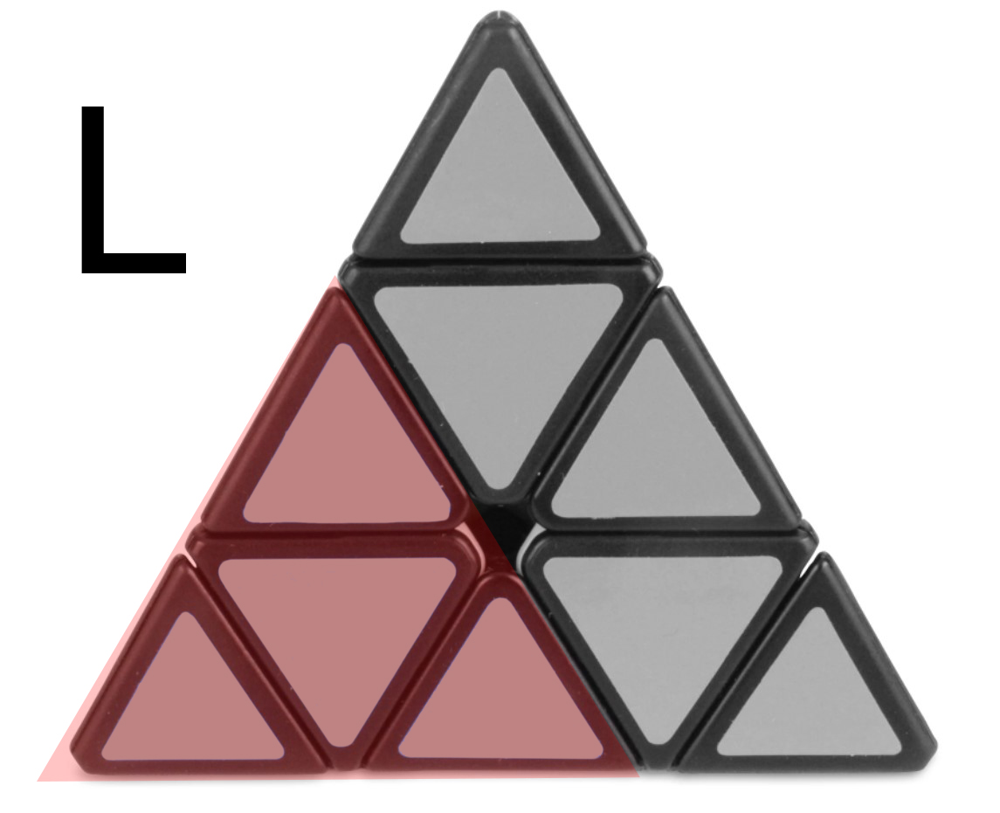

На горенаведените слики го гледаме лицето на коцката, L ни е левата страна, R - десната и U - горната страна на коцката.
R - Доколку овој дел го завртиме спротивно од нас, чекорот го маркираме како R. Доколку го завртиме кон нас, го маркираме како R'.
L - Доколку овој дел го завртиме спротивно од нас, чекорот го маркираме како L'. Доколку го завртиме кон нас, го маркираме како L.
U - Доколку овој дел го завртиме така што лицето кое го гледаме се движи на десно, чекорот го маркираме како U'. Доколку го завртиме така што лицето се врти кон лево, го маркираме како U.
Чекор 1
Сега би започнале со решавање на коцката. Првиот чекор е интуитивен и нема алгоритми. така што коцката треба да ја завртите така што ќе изгледа како наведената слика:
Чекор 2
Со вториот чекор би дошле до ситуација каде би имале 1 страна со иста боја и 1 слој со точно наместени делови. Во овој случај би почнале со решавање на сината страна.
Во прилог ги имаме 3те случаеви на кои можеме да наидеме:
1) 2) 3)
Случај 1: U' L' U L. каде сино-црвениот дел ни се наоѓа на левата страна
Случај 2: U R U' R'. каде сино-црвениот дел ни се наоѓа на десната страна
Случај 3: R U R'. каде сино-црвениот дел ни се наоѓа на долниот слој. Со извршување на овој алгоритам, се враќаме на Случај 1.
Овие чекори ги правиме на црвената, зелената и портокаловата страна така што долната страна да ни биде целосно сина и долниот слој ќе ни биде завршен.
Алгоритам 1: R' L R L' U L' U' L
Алгоритам 2(Clockwise): R U R' U R U R'
Алгоритам 2(Anti-Clockwise): L' U' L U' L' U' L
Доколку се соочиме со ваква ситуација, каде 2 странични делчиња треба да бидат завртени наопаку ќе ни биде потребен Алгоритам 1, така што коцката ќе ја завртиме каде ќе ја гледаме црвената страна па ќе го извршиме алгоритмот.
Доколку се соочиме со ваква ситуација,каде страничните делчиња треба да се изротираат на друга страна, го користиме Алгоритам 2 зависно од насоката на која тие треба да бидат подместени.